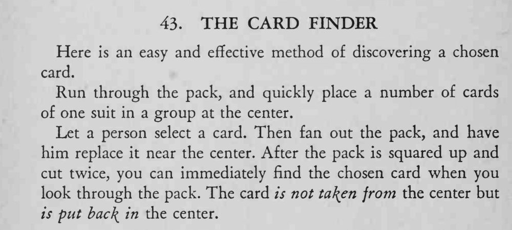

观众把选牌插回牌堆中央，魔术师只切两次牌，再翻看一遍牌堆，就立刻指出了那张选牌。
同花色牌要集中成一叠当标记，选牌插回中央后才会显出异常。

Here is an easy and effective method of discovering a chosen card. Run through the pack, and quickly place a number of cards of one suit in a group at the center. Let a person select a card. Then fan out the pack, and have him replace it near the center. After the pack is squared up and cut twice, you can immediately find the chosen card when you look through the pack. The card is not ta\en from the center but is put bac\ in the center.